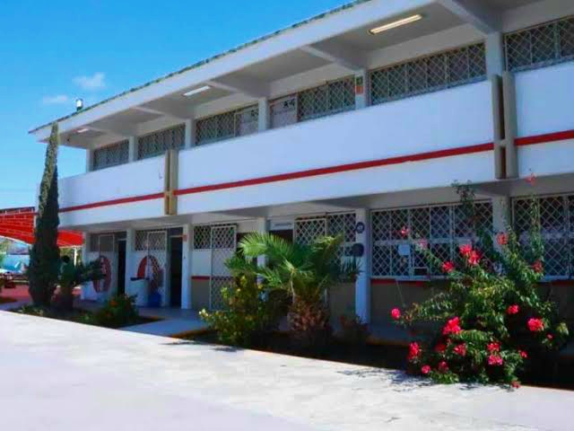

Bienvenido al sistema de gestión de información del proyecto "Problema Laboral" para la clase de TICS.
Este sitio ha sido diseñado como una base de datos centralizada donde recolectamos toda la evidencia académica y los contenidos de las materias impartidas en el COBAT 22.
El objetivo es demostrar las habilidades en desarrollo web y organización de la información, aplicando un estilo visual retro que combina la nostalgia tecnológica de Windows con una paleta de colores sofisticada en tonos cobre y rosa.
Navega a través de las pestañas superiores para consultar los módulos de cada materia y conocer al equipo de desarrollo.

preview_image.jpg